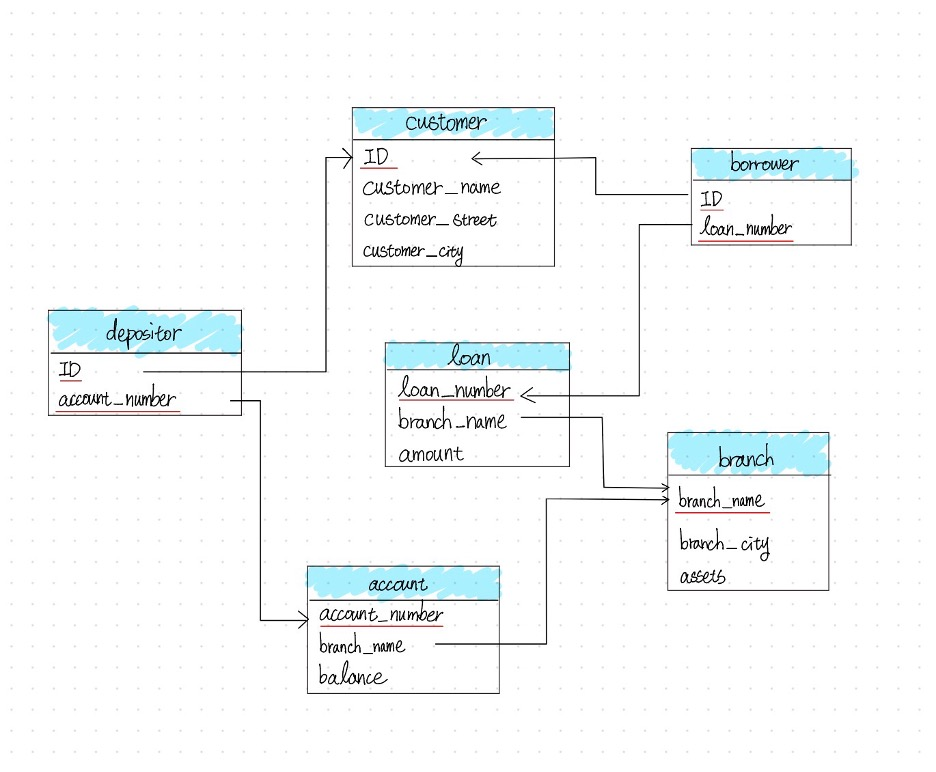
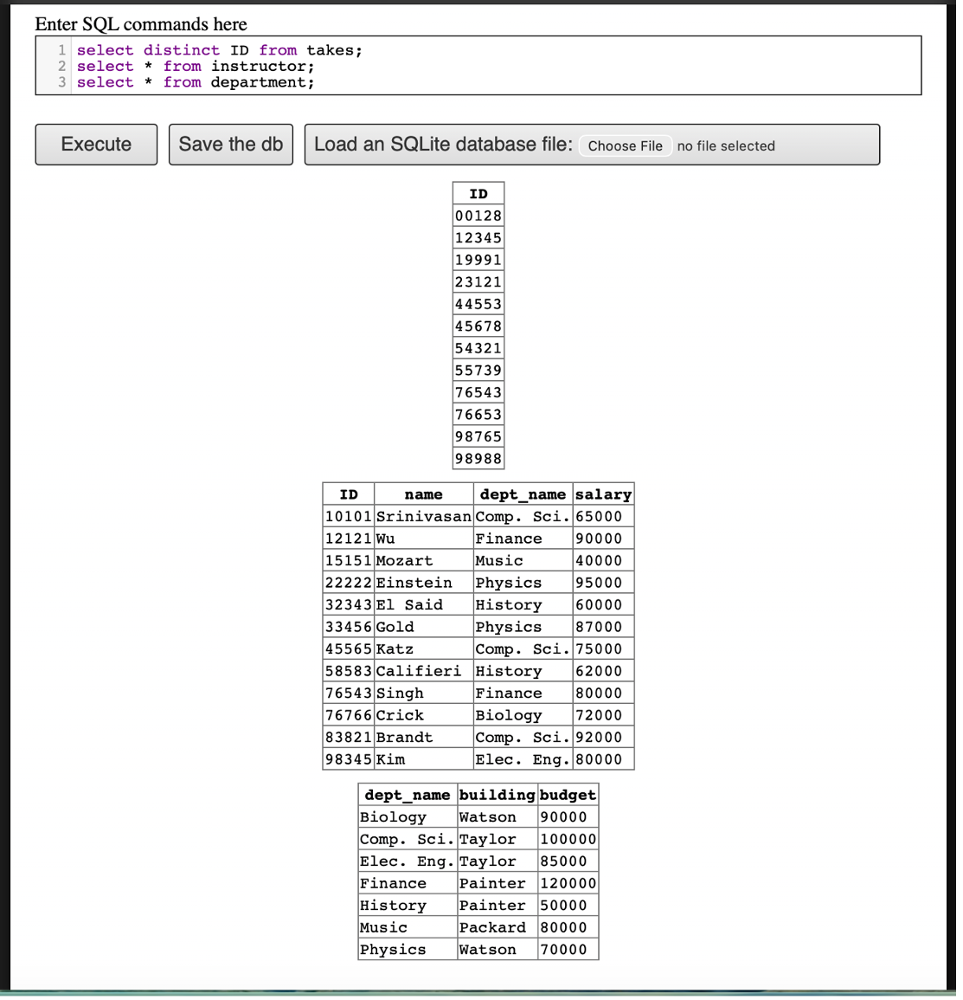
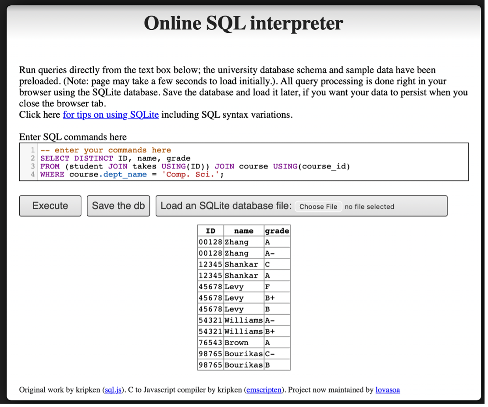
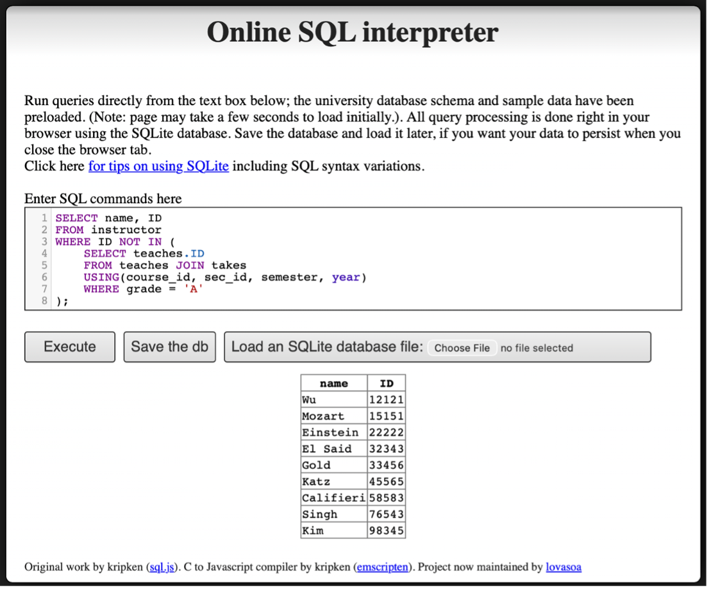
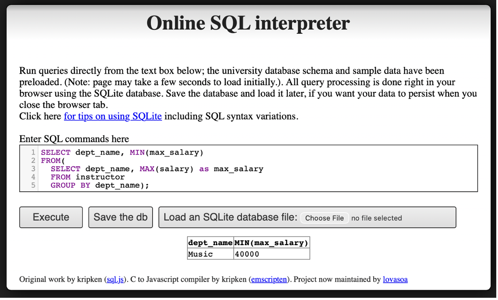

Information Management
Assignments
Assignment 1
Question 1
Name and describe three applications you have used that employed a database system to store and access persistent data. (e.g. airlines, online trade, banking, university system)
For the first question, one example that comes to mind is video games. In video games, a player’s level and experience points, as well as the items and equipment they have obtained, are recorded, so the player can still access them the next time they log in. Another example is online shopping. For instance, Amazon records information such as the price of each product, the catalog it belongs to, whether it is eligible for free shipping, and whether it is in stock. A third example is a streaming platform, such as Netflix, which records a user’s region and subscription level. All of this data is stored persistently and can be accessed at a later time.
Question 2
Propose three applications in domain projects (e.g. criminology, economics, brain science, etc.) Be sure you include: i. Purpose ii. Functions iii. Simple interface design
Wardrobe Management Database
i. Purpose
The main purpose of this wardrobe management database is to minimize the time spent choosing outfits before going out.
For many people, the difficulty in daily outfit selection is not a lack of clothing, but the need to simultaneously consider colors, styles, occasions, and overall coordination, which leads to a high decision-making cost.
Therefore, I model the wardrobe as a relational database, which not only records individual clothing items but also describes the relationships between items, allowing outfit selection to be handled in a systematic way.
By structuring clothing data, this system aims to transform “rethinking what to wear every day” into “quickly selecting optimal combinations from a database.”
ii. Functions
In this system, each clothing item is treated as a data entity and described using a set of attributes, such as:
- category (T-shirts, jeans, outerwear, shoes),
- color (including the proportion of each color),
- style (clean-fit, formal, vintage, sports, etc.),
- material (denim, linen, cotton).
These attributes are normalized into multiple tables, and many-to-many relationships are used to represent that a single item can belong to multiple styles or be suitable for different occasions.
The core function of this database is not only to store items, but to describe the compatibility between items.
The system uses compatibility rules to define:
- Visual aesthetic constraints, such as avoiding more than three colors in a single outfit and limiting the number of style tags to maintain overall consistency
- Climate adaptability, where combinations are evaluated based on insulation-related variables to ensure balanced warmth between upper and lower body layers, and higher overall insulation is preferred as the temperature decreases
When a user selects a specific item (for example, a pink T-shirt), the system can immediately recommend other highly compatible items (such as light blue jeans and white sneakers) based on database relationships and rules, and rank these combinations by compatibility score to help the user make decisions more efficiently.
In addition, as data accumulates, the system can analyze the overall structure of the wardrobe, such as:
- Whether certain styles or clothing categories are lacking
- Whether colors or item types are overly concentrated
- Whether newly purchased items overlap in function with existing ones
- Which older items have not been used for a long time and could be considered for removal
This allows the wardrobe to function not just as an item list, but as a system that can be queried, analyzed, and optimized, and that can be extended to daily life applications such as outfit recommendations and purchase decision support.
This problem is particularly well suited for a relational database, because outfit selection inherently involves structured data and many-to-many relationships (such as items, styles, and compatibility rules), which can be efficiently combined and analyzed through relational queries.
iii. Simple interface design
When users enter the system, the home page displays a table view of all items in the wardrobe, including basic information such as category, color, style, material, and seasonality. The interface supports multi-select functionality.
Users can select one or more items they plan to wear and submit their selection to generate outfit results.
Based on the selected items and the compatibility rules stored in the database, the system generates multiple outfit candidates.
The outfit results page provides different sorting options, such as sorting by comfort score, aesthetic score, or climate fit score.
Each outfit displays its corresponding numerical scores, allowing users to quickly compare options and select the most suitable combination without repeatedly trying on clothes or overthinking the decision.
The interface supports fast decision-making: select items → generate outfits → sort by scores → pick the best match.
3D Printing Farm Order & Scheduling Database
i. Purpose
The purpose of this 3D printing farm database is to systematize the entire workflow—from customer order intake to automated estimation, machine scheduling, and progress tracking—so the farm can operate efficiently as order volume grows. The goals are to shorten turnaround time, reduce human scheduling errors, improve machine utilization, and maximize profitability.
In practice, 3D printing orders vary widely (model size, material, resolution, multi-color requirements, and post-processing such as painting). If pricing and scheduling rely on manual judgment, it is easy to underestimate time/cost, assign the wrong machine, or create bottlenecks in the order queue. Therefore, this system uses a relational database to store orders, machine capabilities, material usage, and scheduling states in a structured way, enabling fast and consistent decisions through rules and queries.
ii. Functions
Order intake & requirement tagging (Order Intake & Requirement Tagging)
When a customer submits an order, the system stores it as an order record with structured attributes, such as:
- Model size and volume (bounding box / volume)
- Printing type (FDM / SLA)
- Resolution settings (layer height / resolution)
- Multi-color requirement (multi-color)
- Material type (material type)
- Post-processing needs (post-processing, e.g., painting/sanding)
- Other customization requests (stored as tags)
These fields can be normalized into multiple tables, with many-to-many relationships used to represent that a single order can have multiple requirement tags.
Per-machine estimation (Per-Machine Estimation)
The key is not only to calculate an overall price for the order, but to estimate how the same order would perform on different machines, since time, cost, and completion time may vary by machine. This supports better machine assignment and scheduling decisions.
For each candidate machine, the system applies pricing rules or an estimation model to perform per-machine estimation, including:
- Estimated print time (estimated print time)
- Estimated material usage (estimated material usage)
- Machine-specific estimated cost & quote (machine-specific estimated cost & quote)
- Estimated completion time (estimated completion time, considering current workload)
The system stores these “order × machine” estimates for querying and ranking using different objective functions, such as lowest cost, earliest completion, or the most stable option within a deadline.
Order queue & status tracking (Order Queue & Status Tracking)
All orders are automatically added to an order queue (order list), and each order maintains a clear status, such as:
- pending
- queued
- printing
- post-processing
- completed
- failed
Managers can query:
- What is currently in the queue and its priority
- Which orders are printing vs. waiting for machines
- Which failed orders require reprinting or manual intervention
Machine capability modeling & assignment recommendations (Machine Capability & Assignment)
The database stores each machine’s capabilities and constraints, such as: - Machine type: multi-color / single-color / SLA / FDM - Maximum build volume (max build volume) - Supported materials (supported materials) - Speed/quality profile (speed/quality profile) - Current workload and availability (workload & availability)
When a new order arrives, the system first performs constraint filtering (e.g., size, material, multi-color requirements) to identify feasible machines, then uses per-machine estimation to generate recommended assignments, for example:
- Earliest completion time (earliest completion time)
- Lowest estimated cost (lowest estimated cost)
- Balanced option (deadline + stability)
This turns scheduling into a decision-support process rather than manual guesswork.
iii. Simple interface design
On the customer side, the system provides a customer order page where users can upload a 3D model or specify printing requirements such as size, material, resolution, multi-color options, and post-processing needs. Based on this information, the system automatically returns an estimated price and an estimated delivery time.
On the admin side, the system offers an order dashboard that displays the current order queue and order statuses. Administrators can sort or filter orders by deadline, priority, or processing status to manage workflow more efficiently.
The system also includes a machine dashboard that lists all available machines along with their machine type, maximum build volume, supported materials, current workload, and estimated availability. This allows operators to quickly understand machine capacity and constraints.
When an order is selected, the scheduling view presents a list of candidate machines that can fulfill the order. For each candidate machine, the system displays the estimated print time, estimated material usage, machine-specific cost and quote, and estimated completion time. The interface supports one-click sorting options, such as fastest, cheapest, or most stable, to assist administrators in making assignment decisions.
The interface supports efficient operations: submit order → per-machine estimation → queue order → recommend machines → schedule & track progress.
Wardrobe Management Database
i. Purpose
The purpose of this system is to manage the core information of a farm—such as fields, crop types, growth stages, and irrigation equipment—using a relational database.
At the same time, the system retrieves and stores weather data through APIs provided by weather forecast services, and combines this information with a set of irrigation rules to automatically generate a daily irrigation schedule.
The goal is to reduce manual decision-making costs while improving water-use efficiency and consistency in crop management.
ii. Functions
In this system, the database is not used only for data storage. Its core function is to integrate internal farm information with external weather data and automatically generate irrigation decisions based on predefined rules.
Core Data Management
The system uses a relational schema to manage the main entities of the farm, including:
- Field: field ID, location, area, and the crop currently planted
- Crop: crop type and its basic water requirements
- Growth Stage: stages such as germination, growth, flowering, and fruiting, each with different water needs
- Irrigation Equipment: equipment type (e.g., drip irrigation, sprinkler), flow rate or efficiency factor, and availability status
These entities are connected through relationships. For example, each field is associated with a specific crop and a current growth stage, and can be assigned available irrigation equipment.
Weather Data Integration
The system retrieves weather information through external weather forecast APIs, such as:
- Predicted rainfall amount
- Probability of precipitation
- Temperature range
This weather data is stored in the database and used as an important input for daily irrigation decisions, without requiring manual input from users.
Irrigation Rules and Schedule Generation
The system maintains a set of irrigation rules that describe irrigation requirements under different conditions, such as:
- Crop type × growth stage → recommended baseline irrigation amount
- If predicted rainfall exceeds a certain threshold → automatically reduce or cancel irrigation for the day
- Differences in irrigation equipment efficiency → adjust actual irrigation duration
When the daily scheduling process runs, the system combines:
- The crop type and growth stage of each field
- The weather forecast for the day
- The availability and efficiency of irrigation equipment
Based on this information, the system automatically generates a daily irrigation schedule, indicating whether each field requires irrigation and the recommended water amount or irrigation time.
iii. Simple interface design
When users enter the system, the home page displays a table view of all fields on the farm, including the current crop type, growth stage, and the system’s irrigation recommendation for the day.
Users can generate the daily irrigation schedule with a single action. Based on field information, weather forecasts, and irrigation rules, the system lists which fields require irrigation and provides recommended water amounts or irrigation durations.
The schedule is presented in a simple list format, allowing users to quickly review and execute irrigation tasks. After completion, users can mark irrigation status for record-keeping and future reference.
Question 5
What are the things current database system cannot do?
Current database systems are not capable of understanding the semantics behind data. As a result, in more complex applications, they often rely on manually defined rules or continuously adjusted weights to produce reasonable outputs. In addition, databases are limited in handling cross-context decision-making, where multiple competing objectives must be balanced simultaneously.
For example, in a wardrobe management database, the system can evaluate outfits based on structured criteria such as color combinations, style tags, material properties, and weather conditions. It can assign scores for factors like aesthetic quality, comfort, and climate suitability, and generate multiple candidate outfits that satisfy predefined rules. However, the database cannot determine which outfit represents the optimal balance among being visually appealing, comfortable, and suitable for the weather.
This limitation arises because preferences such as “looking good” or “feeling comfortable” are inherently subjective and context-dependent, and there is no single optimal solution that applies to all users or situations. Therefore, the role of the database is not to make the final decision, but to support decision-making by filtering infeasible options, structuring relevant information, and presenting comparable alternatives with transparent evaluation metrics.
Ultimately, the final choice must be made by the user, who can decide whether to prioritize comfort, aesthetics, or climate suitability in a given context. This highlights a fundamental limitation of current database systems: they are effective at decision support, but they cannot replace human judgment in complex, value-driven decisions.
Question 6
Describe at least three tables that might be used to store information in a social-network/social media system such as Twitter or Reddit.
A social-network or social media system such as Twitter or Reddit may be supported by at least the following three core tables:
1. User Table
The user table stores basic information about users, such as: - user_id - username - account creation time - profile metadata (e.g., bio or status)
This table represents the identities of users and serves as a reference for other tables in the system.
2. Post Table
The post table stores content created by users, such as:
- post_id
- author_id (foreign key referencing the User table)
- content
- timestamp
Each post is associated with a specific user, forming a one-to-many relationship between users and posts.
3. Comment Table
The comment table stores replies to posts (or other comments), such as:
- comment_id
- post_id (foreign key referencing the Post table)
- author_id
- content
- timestamp
This table supports threaded discussions and allows multiple users to participate in conversations under the same post.
These tables are separated to support relational queries, maintain data consistency, and enable efficient retrieval of users, posts, and discussion threads.
Assignment 2
Question 1
What are the differences between relation schema, relation, and instance? Give an example using the university database to illustrate.
Relation Schema = The logical structure of a relation: a list of attribute names and their domains. It does not change over time.
Example:instructor(ID, name, dept_name, salary)Relation = Informally used to refer to both the schema and instance together.
Example: “The department relation” can refer to either the schemadepartment(dept_name, building, budget)or the actual data it currently holds.Instance = A snapshot of the actual data in a relation at a given point in time. It changes as tuples are inserted, updated, or deleted.
Example: The department relation instance in Figure 2.5 contains 7 tuples. If the university adds a “Data Science” department, the instance grows to 8 tuples, but the schema remainsdepartment(dept_name, building, budget).
Question 2 & 3
Draw a schema diagram for the following bank database. Identify primary keys (underlined) and foreign keys.
The bank database consists of the following relations:
branch(branch_name, branch_city, assets)customer(ID, customer_name, customer_street, customer_city)loan(loan_number, branch_name, amount)borrower(ID, loan_number)account(account_number, branch_name, balance)depositor(ID, account_number)

Question 4
Describe two ways artificial intelligence or LLM can assist in managing or querying a database. In your answer, briefly explain how each method improves efficiency or accuracy compared to traditional (non-AI) approaches. (3–5 sentences)
Natural Language to SQL (Querying): LLMs can translate plain language questions directly into executable SQL queries, lowering the barrier for non-technical users and reducing syntax errors compared to writing SQL manually.
AI-Driven Database Tuning (Managing): LLMs can automatically analyze slow queries and recommend index optimizations, replacing the traditionally time-consuming process of a DBA manually examining query logs and execution plans.
Overall, both approaches reduce the need for specialized expertise and allow faster, more accurate database operations compared to traditional manual methods.
Assignment 3
Question 1
Open the Online SQL interpreter and load the university database.
Question 2
Write SQL codes to get a list of: i. Student IDs, ii. Instructors, iii. Departments

takes), Instructors, and DepartmentsQuestion 3
Write SQL codes to do the following queries:
i. Find the ID and name of each student who has taken at least one Comp. Sci. course; make sure there are no duplicate names in the result.

ii. Add grades to the list

iii. Find the ID and name of each student who has not taken any course offered before 2017.

iv. For each department, find the maximum salary of instructors in that department.

v. Find the lowest, across all departments, of the per-department maximum salary computed by the preceding query.

vi. Add names to the list

Question 4
Find instructor (with name and ID) who has never given an A grade in any course she or he has taught. (Instructors who have never taught a course trivially satisfy this condition.)

Final Project
Weather- and Occasion-Aware Wardrobe Database with Rule-Based Outfit Recommendation
Project Overview
A single-user wardrobe management system. Each morning, the system reads the user’s calendar (to determine the occasion) and the current weather, filters out unwearable items (dirty or archived), and ranks candidate outfits using a rule-based scoring engine built on color theory, fabric compatibility, and style coherence. The output is the best recommended outfit plus 3–5 ranked alternatives, each with a score and explanation.
Core workflow: Wake up → Read calendar (occasion) + weather → Filter wearable items → Score outfit combinations → Output recommendation
Three scoring dimensions:
- Color — 60/30/10 color theory; each item carries a
primary / secondary / accentcolor role - Fabric — same-fabric bonus, mixed-fabric reasonableness, warmth adequacy relative to weather
- Style — style-tag consistency across items, and style–occasion fit scores
Database Tables
Reference Tables
| Table | Key Columns | Description |
|---|---|---|
User |
user_id PK, name |
Stores user identity |
Category |
category_id PK, name |
Clothing categories: top, bottom, shoes, outerwear, accessory |
Color |
color_id PK, name |
Color names (black, white, navy, grey, beige…) |
Fabric |
fabric_id PK, name, warmth_weight, breathability |
Fabric type with warmth (0–100) and breathability (0–100) ratings |
StyleTag |
style_id PK, name |
Style labels: street, formal, clean fit, simple, blokecore… |
Occasion |
occasion_id PK, name, target_formality_min, target_formality_max |
Occasion with required formality range |
Style & Calendar
| Table | Key Columns | Description |
|---|---|---|
StyleOccasionFit |
style_id FK, occasion_id FK, fit_score |
Fit score (0–100) between a style and an occasion (PK: style_id + occasion_id) |
CalendarEvent |
event_id PK, user_id FK, occasion_id FK, event_date, start_time |
Calendar entry mapped to an occasion; drives automatic occasion detection |
Weather
| Table | Key Columns | Description |
|---|---|---|
WeatherSnapshot |
weather_id PK, location, temp_c, feels_like_c, humidity, wind_speed, precip_mm |
Real-time weather data snapshot |
WeatherCondition |
condition_id PK, name, temp/precip/wind/humidity ranges |
Named weather condition (e.g. cold_rainy, hot_humid) used for rule matching |
Outfit
| Table | Key Columns | Description |
|---|---|---|
Outfit |
outfit_id PK, user_id FK, occasion_id FK, weather_id FK, total_score, explanation |
Generated outfit with total score and explanation |
OutfitItem |
PK(outfit_id, slot, layer_order), item_id FK |
Outfit detail; supports multi-layer dressing within the same slot |
Scoring Rules
| Table | Key Columns | Description |
|---|---|---|
OutfitScoringRule |
score_rule_id PK, rule_type, score_delta, condition_json, valid_from, valid_until |
Scoring rule with optional expiry date to support trend-based rules |
WearDegradeRule |
degrade_rule_id PK, category_id FK, occasion_id FK (nullable), condition_id FK (nullable), delta_clean_score |
Clean score deduction rule; multiple matching rules are stacked per wear event |
Wear Tracking & Laundry
| Table | Key Columns | Description |
|---|---|---|
WearEvent |
event_id PK, user_id FK, outfit_id FK, occasion_id FK, weather_id FK, worn_at |
Records each time an outfit is worn |
WearEventItem |
PK(event_id, item_id), delta_applied, clean_score_after |
Per-item deduction detail and resulting clean score after wear |
LaundryBatch |
batch_id PK, user_id FK, laundry_type (dark/light) |
Laundry batch grouped by color type |
LaundryBatchItem |
PK(batch_id, item_id), reset_to_score = 100 |
Resets clean score to 100 upon laundering |